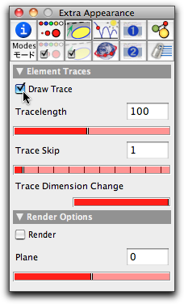

Kepler Ellipses
In this little tutorial we want to set up a very small physics simulation with CindyLab. We want to model a planet orbiting a sun. You should learn in this tutorial how to set up and start running a physics simulation.
After starting Cinderella, go to "add sun" mode by clicking the
 button in the toolbar. Then add a sun at an arbitrary position. After the sun has been added, an animation control will appear. The animation control is always present when physics elements of CindyLab are present. The view will now look approximately like Figure 1.
button in the toolbar. Then add a sun at an arbitrary position. After the sun has been added, an animation control will appear. The animation control is always present when physics elements of CindyLab are present. The view will now look approximately like Figure 1. |
| Figure 1: A sun is born |
Now we add the planet that we want to orbit the sun. The planet needs an initial velocity perpendicular to the sun. Otherwise, it will be attracted directly toward the sun and end up in a singularity. For adding the point go to "add velocity" mode by clicking
 , and perform a press–drag–release operation somewhere near the sun. When the mouse is pressed the mass-point is created. Dragging creates the force, and releasing finalizes the situation. The picture should now look approximately like Figure 2. If not, you can change the position of the points and of the arrowhead in move mode.
, and perform a press–drag–release operation somewhere near the sun. When the mouse is pressed the mass-point is created. Dragging creates the force, and releasing finalizes the situation. The picture should now look approximately like Figure 2. If not, you can change the position of the points and of the arrowhead in move mode. |
| Figure 2: A sun and a planet |
Now you can start the simulation by pressing the play button. Most probably, the animation will run too fast. You can change the animation speed with the slider in the animation control. The planet should describe an elliptical path (this is the essence of Keplers third law).
We now want to make the ellipse a little more visible. For this we want to create a trace of point B, the planet, while it is moving. Open the inspector and go to the "Special Appeareance" tab by clicking the button
 . After point B has been selected, the inspector looks like Figure 3:
. After point B has been selected, the inspector looks like Figure 3: |
| Figure 3: Inspecting the planet |
Check the "Draw Trace" checkbox. This causes Point B to leave a trace as it moves. Now restart the animation. You will see the ellipse as a trace of the planet, as in Figure 4.
 |
| Figure 4: The planet's orbit |
We recommend that you carry out several experiments with this configuration. Here are a few proposals:
- Vary the location of the planet.
- Vary the speed (the magnitude of the velocity).
- Vary the direction of the velocity.
- What happens when more than one sun is present?
Page last modified on Friday 02 of September, 2011 [16:44:24 UTC].
The original document is available at
http://doc.cinderella.de/tiki-index.php?page=Kepler%20Ellipses